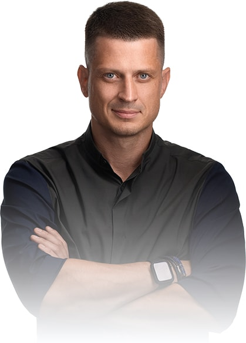
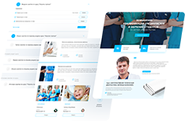
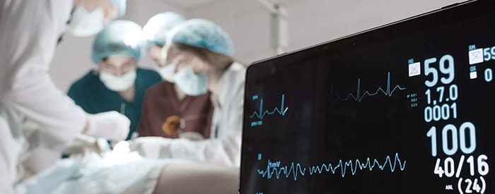
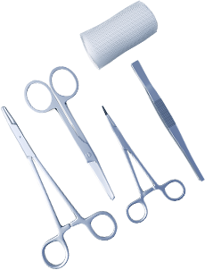
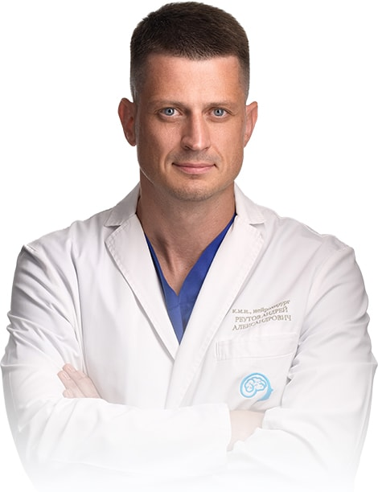
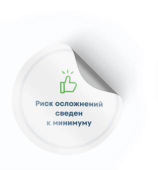

01
Разные доктора
дают разные прогнозы
и ничего не объясняют.
дают разные прогнозы
и ничего не объясняют.
02
Непонятно, к чему
готовиться и насколько
срочно нужна операция.
готовиться и насколько
срочно нужна операция.
03
Переживаете, хватит ли
после операции денег
на дальнейшее лечение.
после операции денег
на дальнейшее лечение.

Меня зовут Андрей Реутов
Более 19 лет я спасаю и продлеваю жизни людям с тяжелыми заболеваниями головного и спинного мозга.
96%
успешных
операций
в год
операций
в год
139
случаев
длительной
ремиссии
длительной
ремиссии
247
случаев
полного
выздоровления
полного
выздоровления
Работаю и провожу
операции в Центральной
клинической больнице
операции в Центральной
клинической больнице
7 лет учился и работал
в институте нейрохирургии
Бурденко
в институте нейрохирургии
Бурденко
Участвовал в основании
с нуля отделения
нейрохирургии в ЦКБ
с нуля отделения
нейрохирургии в ЦКБ
Выходец
из семьи врачей
в 3 поколениях
из семьи врачей
в 3 поколениях
Состою в сообществах:
WFNS
Всемирная Ассоциация Нейрохирургов
EANS
Европейская Ассоциация Нейрохирургов
Российская ассоциация нейрохирургов1
Walter E. Dandy Neurosurgical Society
Мой отец тоже опытный нейрохирург. Вместе мы создали систему дистанционного обучения для хирургов.

Мы хотим, чтобы хороших врачей стало больше и даем доступ к бучению совершенно бесплатно.
Лечу патологии головного и спинного мозга
передовыми методами, на самом современном оборудовании, в команде с одними из лучших врачей России
Любые опухоли головного и спинного мозга
хирургическое удаление опухолей по технике «замочная скважина»: с мини-разрезами в 2-4 см.
дальнейшее лечение можно продолжить здесь же, в ЦКБ.
Мальформация Арнольда - Киари
краниовертебральная декомпрессия по авторской методике с международным патентом.
прооперировал самое большое чисто пациентов в мире с аномалией Киари.
Хирургическое лечение эпилепсии
хирургическое удаление очага заболевания.
решение об удалении принимается после консилиума и тщательной диагностики в ЦКБ или после диагностики в моей клинике в Осетии.
Гидроцефалия
2 метода лечения:
эндоскопическая операция без установки шунта: формирование мини-отверстия для оттока жидкости.
шунтирование универсальным программируемым шунтом с возможностью регулировать отток жидкости.
Восстановительные операции после ЧМТ
стереолитография (устранение дефектов костей черепа) с помощью 3D-моделирования.
Невралгия тройничного нерва
васкулярная (сосудистая) декомпрессия корешка тройничного нерва.
Какие болезни я не лечу
остеохондроз
грыжи
заболевания периферической нервной системы
Как мы сохраняем
речевые функции и профессиональные навыки пациентов при операциях на мозге
Операция с пробуждением
Нейролингвист будит вас во время операции и проводит тесты:
задает вопросы по теме вашей профессиональной деятельности;
просит сложить цифры;
прочитать предложения;
сказать, что на картинке.

Интраоперационный мониторинг
Во время операции за вами непрерывно наблюдает физиолог.
С помощью специальных датчиков он отслеживает состояние вашей нервной системы и предотвращает ее повреждения.
Средний срок ожидания в очереди на плановую операцию - 2-3 месяца

Если нужна срочная операция, она проводится в день или на следующий день после обращения
Отказали везде? Назвали вашу ситуацию безнадежной?
Берусь за случаи любой сложности, включая возраст 80+ лет
Все операции проводятся в ЦКБ, у нас в доступе - лучшие врачи по любому профилю.
Если во время операции что-то пойдет не по плану, вам тут же помогут.
Во многих больницах доктор впервые видит пациента уже на операции.
Первые разрезы делают ординаторы, а хирург только удаляет опухоль.
Иногда до операции вы даже не знаете имени хирурга.

Всех пациентов я веду сам - от консультации до операции
Я сам провожу
консультацию и
осмотр, оформляю
историю болезни.
консультацию и
осмотр, оформляю
историю болезни.
Лично
сопровождаю вас
в операционную.
сопровождаю вас
в операционную.
Сам делаю разрез,
удаляю опухоль,
накладываю
швы.
удаляю опухоль,
накладываю
швы.
Не ухожу домой,
пока не пойму, что вы
проснулись и операция
прошла успешно.
пока не пойму, что вы
проснулись и операция
прошла успешно.
После операции захожу к вам
1-2 раза в день, перевязываю,
проверяю самочувствие.
1-2 раза в день, перевязываю,
проверяю самочувствие.
Чтобы составить обо мне впечатление,
посмотрите передачи с моим участием
10:54
Выступление про опухоли головного мозга в программе «О самом главном»
10:54
Выступление про опухоли головного мозга в программе «О самом главном»
10:54
Выступление про опухоли головного мозга в программе «О самом главном»
10:54
Выступление про опухоли головного мозга в программе «О самом главном»
Или почитайте,
что говорят обо мне пациенты
Запишитесь ко мне
на встречу онлайн или в Москве
на встречу онлайн или в Москве
Честно расскажу обо всех вариантах лечения и рисках,
чтобы вы приняли взвешенное решение
чтобы вы приняли взвешенное решение
Вы также узнаете:
сколько точно будет стоить
операция вместе с реабилитацией
операция вместе с реабилитацией
потребуется ли вам
дальнейшее лечение
дальнейшее лечение
Оставьте свои данные
Я перезвоню в течение 1 дня
отправляя форму вы даете согласие
на обработку данных
на обработку данных
Человек должен владеть всей информацией о своей болезни, а не мучаться от страха неопределенности. Я всегда говорю пациентам правду без приукрашивания.
Реутов Андрей
нейрохирург
При этом даю понять, что я рядом и готов пройти вместе с вами любой путь, каким бы сложным он ни был
Стоимость операции зависит от вашей ситуации
Она может составлять от NNN до NNN тысяч руб.
В цену операции уже входит все
В цену операции уже входит все
сама операция
и моя работа
и моя работа
работа анестезиолога,
физиолога и других врачей
физиолога и других врачей
реабилитация с
проживанием и питанием
проживанием и питанием
Делаю операции по квотам.
Вы можете уточнить у меня, подходит ли ваша ситуация под квоту.
Вы можете уточнить у меня, подходит ли ваша ситуация под квоту.
Во время операции мне помогает команда лучших врачей ЦКБ
За счет малой инвазивности
вы возвращаетесь к
нормальной жизни
за 5-7 дней
нормальной жизни
за 5-7 дней

Малая инвазивность
Разрез в 2-4 см по технике «замочная скважина»
Сохранение красоты
Никаких вмятин и уродливых шрамов
Быстрое восстановление
Реабилитация в полном комфорте